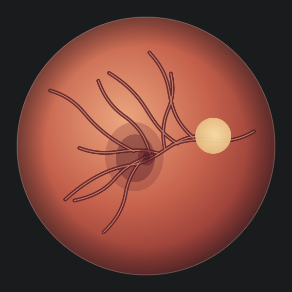
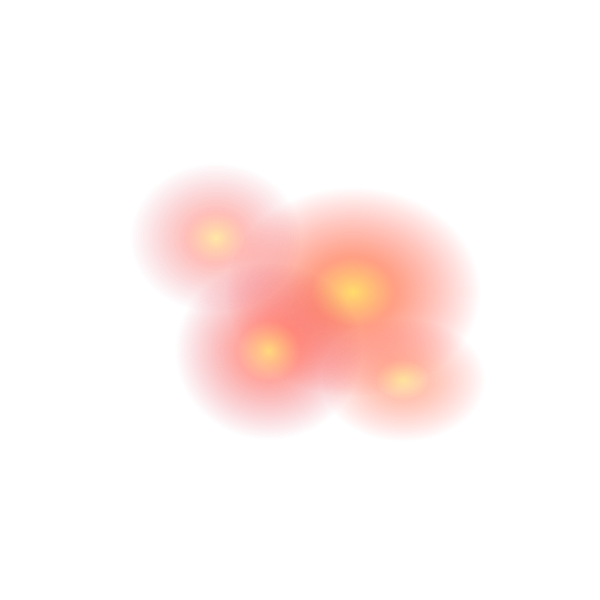

DEMO DATA
05Example screenings✓ Five severity classes representedretinacare
COMMUNITY SCREENING · DAVAO CITY (DEMO)
Screening overview
A clear view of retinal screening activity and cases that need a closer look.
WORKFLOW
2Review stepsImage preview → sample resultEXPLAINABILITY
Grad-CAMVisual explanation conceptIllustrative heatmap overlaySAMPLE CASE MIX
Severity distribution
Example cases are spread across the five levels used in the study.
Sample cases only5 examples
GET STARTED
Screening workflow
01
Add a fundus imageChoose an image or use the demo
✓02
Review an example resultExplore the grade and heatmap view
✓DEMONSTRATION RECORDS
Recent screenings
| CASE REFERENCE | SEVERITY | CONFIDENCE | IMAGE |
|---|
DEMO WORKSPACE
Screenings
Browse example cases and open a sample result.
| CASE REFERENCE | SEVERITY | CONFIDENCE | IMAGE SOURCE | DATE ADDED |
|---|
⌕No matching example cases
Try a different reference or severity level.
SCREENING WORKSPACE
New screening
Preview an image, then explore a simulated result scenario.
1
Image & detailsPrepare a preview
2
Result reviewExplore sample output
STEP 1 OF 2
Fundus image
Select a retinal image from this device. The file stays in this browser tab and is not uploaded or saved.

ILLUSTRATIONDEMO CONTROLS
Sample result scenario
No trained model is connected. Choose a severity to preview how the result screen changes. The sample output is not generated from your image.
Based on the five categories named in the thesis.
5
Five-class outputNo DR · Mild · Moderate · Severe · Proliferative
Illustrative workflow only · not for clinical use
SAMPLE RESULT · NOT A MODEL PREDICTION
Screening result
Demo reference · Right eye
VISUAL EXPLANATION CONCEPT
Image & heatmap

Illustrative Grad-CAM-style overlay · not generated from this image
LOWER INFLUENCE
HIGHER INFLUENCE
SAMPLE CLASSIFICATION
DEMOPredicted severity
Moderate NPDR
Example confidence86%
Five-class distributionExample only
Requires clinician review. This simulated output cannot be used for screening decisions, diagnosis, or referral.
INTERPRETABILITY NOTE
What the heatmap represents
The thesis proposes Grad-CAM to highlight image regions that influence a model’s class score. This prototype uses a decorative overlay to show where that explanation would appear; it does not identify confirmed lesions.
PROPOSED RESEARCH MODEL
Model overview
The thesis pairs two image backbones and adds a visual explanation step.
PROPOSED PIPELINE
From fundus image to explanation
Fundus imagePreprocess · normalize
→
InceptionV3Multi-scale features · 2,048
ResNet50Residual features · 2,048
Feature fusionConcatenate · SE attention
→
Five DR classesWeighted classifier
✳
Grad-CAM visual explanationUses feature-map gradients to form a class-specific heatmap in the proposed model.
→Heatmap viewAPPLICATION DATA MODEL
Reusable base classes
The prototype keeps screening details, model output, and case-list behavior in separate objects.
ScreeningCaseReference, eye side, image label, date, and result.
PredictionResultSeverity, example confidence, five class scores, and simulation flag.
PrototypeAnalyzerProvides selectable demonstration scenarios; it does not inspect image pixels.
ScreeningStoreAdds, retrieves, and searches example screening records in memory.
FIVE-LEVEL SEVERITY SCALE
Classification categories
Categories named in the thesis based on the International Clinical DR Severity Scale.
- 01No DR
- 02Mild NPDR
- 03Moderate NPDR
- 04Severe NPDR
- 05Proliferative DR